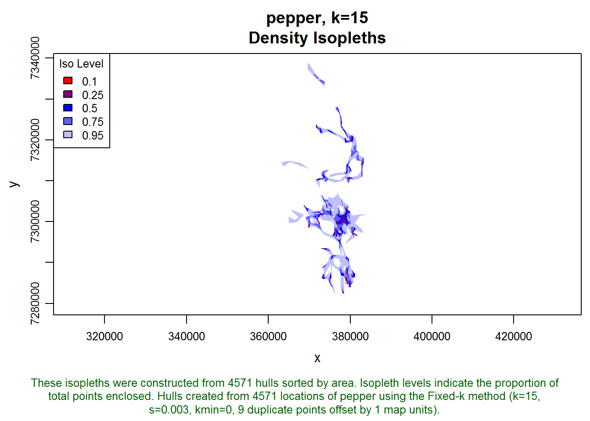
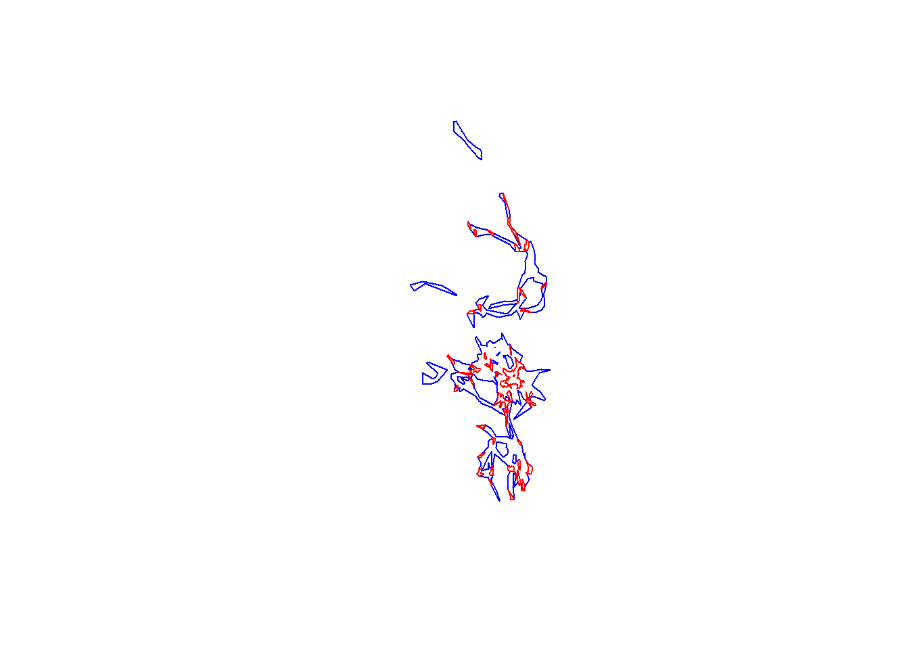
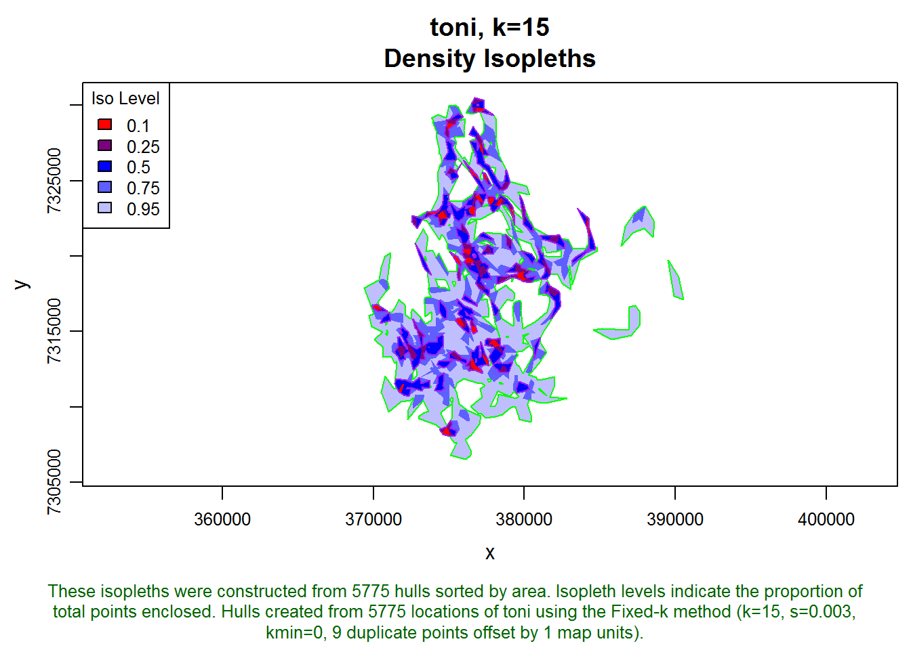
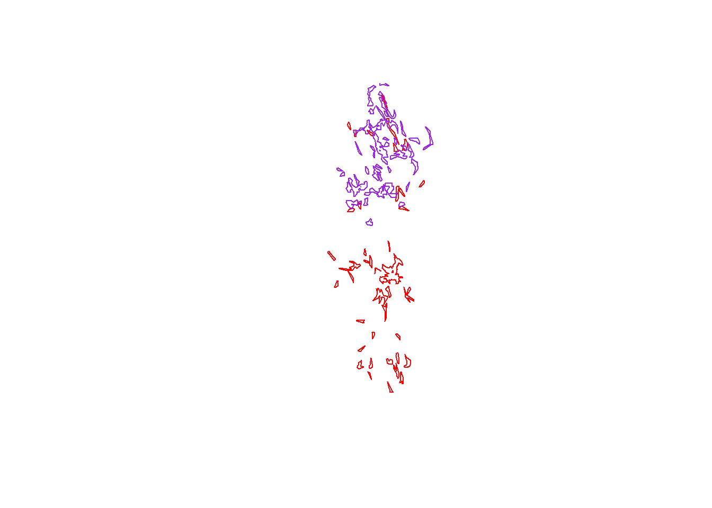
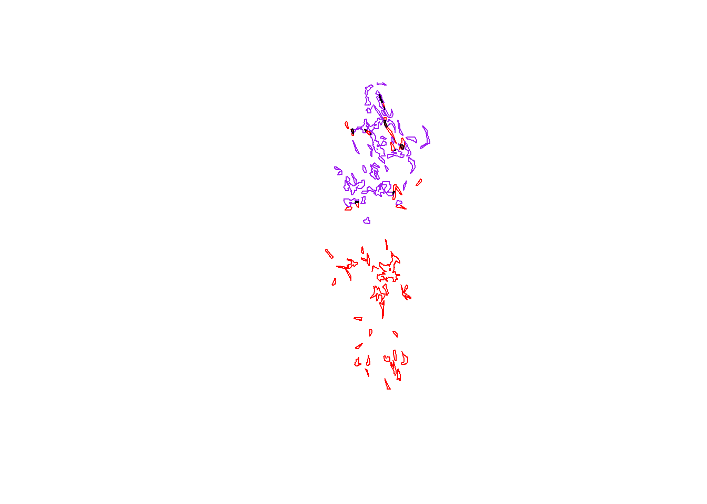
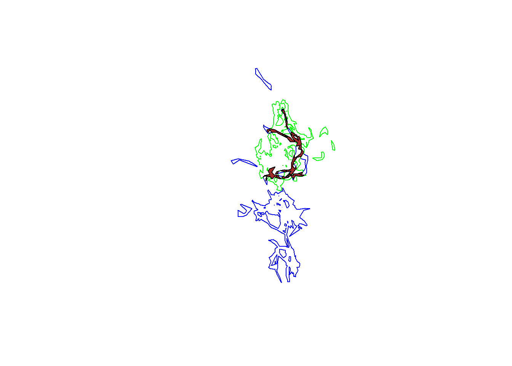

This T-LoCoH tip demonstrates how to compute the area of overlap between two sets of isopleths.
Download code in this exercise here.
In T-LoCoH, s is a parameter that controls the degree to which the time difference between two locations is factored into the calculation of their ‘distance’, for the purposes of identifying which points are ‘nearest neighbors’. s=0 corresponds to time being ignored, in which case the distance metric is simply Euclidean distance.
A number of indices of association have been developed by ecologists for location data1. The most basic one (but also intuitive) is simply the area of overlap in the home range or core area (often approximated by the 95% and 50% isopleth respectively). In this exercise, we’ll find the area of intersection of the home ranges of two individuals, as computed by T-LoCoH. This same technique could be used to find the area of HR overlap for the same individual during two different time periods, such as wet season and dry season.
Hull-based home range estimators like T-LoCoH compute utilization distributions as a series of nested polygons. So our workflow is essentially to get the correct polygon for each individual, and then find the area of intersection. We’ll be working with home ranges data for two buffalo, pepper and toni, from Kruger National Park in South Africa whose location data are available on MoveBank.org. These datasets have already been analyzed by T-LoCoH and home ranges constructed (see T-LoCoH tutorial for details). Note these datasets are illustrative only, the parameters used have not been cross-checked.
If you don’t have the T-LoCoH package for R installed, you can get it from (http://tlocoh.r-forge.r-project.org/)
require(tlocoh)## Loading required package: tlocoh
## Loading required package: sp
## T-LoCoH for R (version 1.18)
## URL: http://tlocoh.r-forge.r-project.org/Download the hullset for ‘pepper’ the buffalo:
mycon <- url("http://tlocoh.r-forge.r-project.org/pepper.n4571.s0.003.k15.iso.lhs.01.RData")
load(mycon); close(mycon) See what it looks like:
summary(pepper.lhs.k15)## Summary of LoCoH-hullset object: pepper.lhs.k15
## Created by: T-LoCoH 1.15
## [1] pepper.pts4571.k15.s0.003.kmin0
## id: pepper
## pts: 4571
## dates: 2005-09-16 17:18:00 SAST to 2006-12-31 16:34:00 SAST
## movement: tau=3600 (1hs), vmax=4.827, d.bar=158.4
## hulls: 4571
## dups: 9 (offset by 1 map unit)
## mode: k=15, kmin=0, s=0.003
## metrics: area, nep, nnn, perim, scg.enc.mean, scg.enc.sd,
## scg.nn.mean, scg.nn.sd, tspan
## isos: [1] iso.srt-area.iso-q.h4571.i5
## other: -none-
## created: Tue Mar 11 15:34:50 2014plot(pepper.lhs.k15, iso=T)
A locoh-hullset object contains a bunch of stuff. We only need the isopleth polygons, which we can extract with the isopleths() function
pepper.isos <- isopleths(pepper.lhs.k15)The isopleths() function returns a list of SpatialPolygonDataFrame objects, which is how isopleths are saved. In our case, there will only be one list element because pepper only has one set of hulls with one set of isopleths.
class(pepper.isos)## [1] "list"names(pepper.isos)## [1] "pepper.pts4571.k15.s0.003.kmin0_iso.srt-area.iso-q.h4571.i5"class(pepper.isos[[1]])## [1] "SpatialPolygonsDataFrame"
## attr(,"package")
## [1] "sp"Let’s look at the attached dataframe
pepper.isos[[1]]@data## iso.level area edge.len nep ptp hm.val num.hulls
## 1 0.10 1444531 31071 460 0.1006 85056 185
## 2 0.25 6585281 90442 1157 0.2531 171056 544
## 3 0.50 24027295 197715 2288 0.5005 350297 1179
## 4 0.75 62006071 310103 3430 0.7504 658382 2112
## 5 0.95 193837808 367291 4344 0.9503 2342150 3512Next, we get just the 50th and 95% isopleths for Pepper. We are pulling these out using standard indexing syntax for SpatialPolygonDataFrames (which is very similar to the indexing notation for regular data frames)
pepper.core <- pepper.isos[[1]][ pepper.isos[[1]][["iso.level"]]==0.5, ]
class(pepper.core)## [1] "SpatialPolygonsDataFrame"
## attr(,"package")
## [1] "sp"pepper.hr <- pepper.isos[[1]][ pepper.isos[[1]][["iso.level"]]==0.95, ]
class(pepper.hr)## [1] "SpatialPolygonsDataFrame"
## attr(,"package")
## [1] "sp"Plot the core and homerange
plot(pepper.hr, border="blue")
plot(pepper.core, border="red", add=T)
Next, do the same for toni
mycon <- url("http://tlocoh.r-forge.r-project.org/toni.n5775.s0.003.k15.iso.lhs.01.RData")
load(mycon); close(mycon)
plot(toni.lhs.k15, iso=T)
toni.isos <- isopleths(toni.lhs.k15)
toni.core <- toni.isos[[1]][ toni.isos[[1]][["iso.level"]]==0.5, ]
toni.hr <- toni.isos[[1]][ toni.isos[[1]][["iso.level"]]==0.95, ]
plot(toni.hr, border="green", add=T)
plot(toni.core, border="purple", add=T)
Next, let’s find the intersection between pepper’s core area and toni’s core area. First we’ll overlay them on a fresh plot
plot(pepper.core, border="red")
plot(toni.core, border="purple", add=T)
Next, we’ll find the area of intersection of the core areas of Toni and Pepper using a function from the rgeos package:
require(rgeos)## Loading required package: rgeos
## rgeos version: 0.3-6, (SVN revision 450)
## GEOS runtime version: 3.4.2-CAPI-1.8.2 r3921
## Polygon checking: TRUEtp.core.common <- gIntersection(pepper.core, toni.core)
class(tp.core.common)## [1] "SpatialPolygons"
## attr(,"package")
## [1] "sp"plot(pepper.core, border="red")
plot(toni.core, border="purple", add=T)
plot(tp.core.common, col="brown", add=T)
Find the area of intersection of the core areas.
There isn’t a simple built-in function that returns polygon area, but you can easily get it if you know a little bit about the structure of a SpatialPolygons object
tp.core.common@polygons[[1]]@area## [1] 971545Next, let’s do the same for the intersection of their home ranges
plot(pepper.hr, border="blue")
plot(toni.hr, border="green", add=T)
tp.hr.common <- gIntersection(pepper.hr, toni.hr)
plot(tp.hr.common, col="brown", add=T)
tp.hr.common@polygons[[1]]@area## [1] 24573476We see that the area of overlap in the home ranges of toni and pepper is quite a bit larger than the area of overlap of the core areas (which is expected because home ranges are by definition larger than core areas).
This concludes our exercise. A more advanced technique would be to convert the isopleths into a raster probability surface and use the volume of intersection measure of overlap, which we’ll do in another exercise.
T-LoCoH Tips. If you find this tip useful, or have feedback or another question on how to use T-LoCoH, please contact the package author.
(c) 2014
For a review of association indices, see Miller, J. 2012. Using Spatially Explicit Simulated Data to Analyze Animal Interactions: A Case Study with Brown Hyenas in Northern Botswana. Transactions in GIS v16, n3, pp. 271-291, June 2012. http://onlinelibrary.wiley.com/doi/10.1111/j.1467-9671.2012.01323.x/full↩